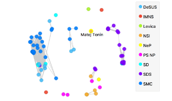
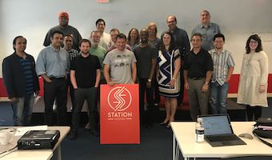
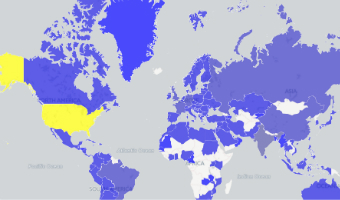

A free visual tool for hyperspectral data analysis.
26 Sep
Presentation of Infrared Orange at WIRMSAt the recent workshop we explored voting patterns of Slovenian members of the parliament. Can we find interesting groups from ballot counts of each MP? Looks like we can... Read more >
12 Aug
Paper in SRNWe paid a visit to a hub for tech startups in Houston and showed how Orange could help anyone to do data science. Read more >
28 Aug
Can We Download Orange Faster?Orange3-geo add-on works with geolocated data. In this example, we analyzed our own data on Orange downloads. Read more >
Native File Loaders
Load your data to unlock the full potential of the Infrared Orange and Orange toolboxes. No more conversions, exporting and multiple copies of data. We support open source formats directly with python code and protected file structures with compiled code through individual agreements with instrument manufacturers.

Interactive Data Exploration
Explore your data with clever data visualization widgets and workflows. Spectral and hyperspectral datasets, statistical distributions, box plots and scatter plots, or dive deeper with decision trees, hierarchical clustering, heatmaps, MDS and linear projections. Even your multidimensional data can become sensible in 2D, especially with clever attribute ranking and selections.

Teachers and Students Love It
When teaching data mining, we like to illustrate rather than only explain. And Orange is great at that. Used at schools, universities and in professional training courses across the world, Orange supports hands-on training and visual illustrations of concepts from data science. There are even widgets that were especially designed for teaching.

Add-ons Extend Functionality
Use various add-ons available within Orange to mine data from external data sources, perform natural language processing and text mining, conduct network analysis, infer frequent itemset and do association rules mining. Additionally, bioinformaticians and molecular biologists can use Orange to rank genes by their differential expression and perform enrichment analysis.

Gad Shaulsky, Ph.D.
Molecular biologist and Director of Graduate Studies
Baylor College of Medicine, Houston, USA
"My laboratory produces large amounts of data from RNA-seq, ChIP-seq and genome resequencing experiments. Orange allows me to analyze my data even though I don’t know how to program. It also allows me to communicate with my collaborators, who are experts in data mining, and with my colleagues and trainees."

Ferenc Borondics, Ph.D.
Principal beamline scientist at SMIS
SOLEIL synchrotron, France
"The hyperspectral imaging and spectroscopy community is in need of tools that allow easy workflows and are capable of analyzing large amounts of data. Orange is a powerful platform to perform data analysis, see data flow and become more productive. It provides a clean, open source platform and the possibility to add further functionality."

Riccardo Bellazzi, Ph.D.
Chair, Centre for Health Technologies
University of Pavia, Italy
"Orange is a great teaching tool, and students love it, because it is easy to use and it allows devoting attention to the high-level conceptual aspects of data mining. The program successfully helps to introduce data analytics to users with no programming experience."